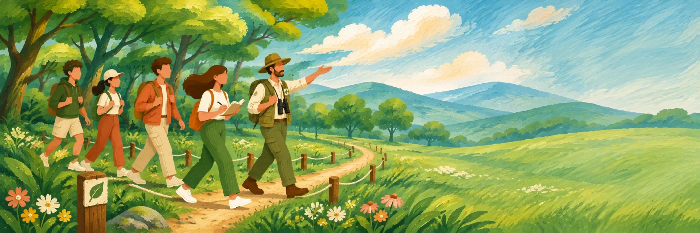

Школа
под открытымнебом
Почти весь школьный день современный ребёнок проводит в четырёх стенах, глядя на доску и экран. А ведь у школы есть класс, который не нужно строить: двор, парк, ближайший лес. В Дании и Германии тысячи детских садов работают прямо в лесу, в Скандинавии и Шотландии уроки на улице стали частью программы, а в России есть своя давняя традиция — юннаты и школьные лесничества. Разбираемся, что говорят исследования об обучении на природе, как начать с одного урока в неделю и как связать это с выращиванием своего леса.
Детство в четырёх стенах
Спросите бабушек и дедушек, как они проводили детство, и вы услышите про двор до темноты, речку, лес, стройки, гаражи. Спросите нынешних школьников — и большая часть дня окажется внутри: класс, транспорт, кружок, дом, экран. Исследователи в разных странах фиксируют одно и то же: время, которое дети проводят на улице, за последние десятилетия заметно сократилось.
Американский журналист Ричард Лув назвал это «дефицитом природы». Это не медицинский диагноз, а метафора, но за ней стоят вполне измеримые вещи: рост близорукости, нехватка движения, тревожность, слабое понимание того, откуда берутся еда, вода и тепло. И, если вспомнить наши тексты об эволюции сознания, ещё одна потеря: чувство связи с природой, которое надёжнее всего предсказывает бережное отношение к ней во взрослом возрасте, вырастает именно из детского опыта.
Школа не может вернуть детям дворовое детство. Но она может сделать так, чтобы часть учёбы проходила там, где растут деревья.
Как это устроено в мире
Идея учить детей на природе не нова: о ней писали ещё Руссо, Песталоцци, Фрёбель — создатель первого «детского сада», где сад был не метафорой, а настоящим садом. Но современная волна началась в середине XX века в Скандинавии.
Подходы разные. Лесной детский сад — это группа, которая почти весь день, в любую погоду, проводит на улице, а помещение служит лишь укрытием. Forest School в британском понимании — регулярные долгие занятия в одном и том же лесу, где дети строят шалаши, разводят костёр под присмотром, работают с инструментами и учатся оценивать риск. Udeskole — самый близкий к обычной школе формат: те же предметы по той же программе, но часть уроков — на улице.
Общее у всех — простая скандинавская поговорка: не бывает плохой погоды, бывает неподходящая одежда.
Своя традиция
У российской школы есть собственное богатое наследство, о котором стоит вспомнить. Юннатское движение с 1918 года объединяло школьников, которые выращивали растения, наблюдали за птицами, ставили опыты на пришкольных участках. Школьные лесничества, появившиеся в 1950–1960-х годах, были, по сути, ранней версией лесного активизма: ученики под руководством лесников собирали семена, выращивали саженцы, сажали и охраняли лес. Многие из них работают до сих пор.
Была и традиция экскурсионного метода: в начале XX века русские педагоги и естествоиспытатели — среди них Борис Райков — настаивали, что природоведение нужно изучать не по картинкам, а в поле, в лесу, на берегу реки. Пришкольные участки и экологические тропы сохранились во многих школах — нередко заброшенными, но готовыми ожить.
Иначе говоря, «школа под открытым небом» для России — не заграничная мода, а возвращение к собственным корням, только с новыми знаниями о том, почему это работает.
Что говорят исследования
Энтузиасты обучения на природе иногда обещают слишком много — от излечения всех болезней до гениальности. Разберём, что подтверждено достаточно надёжно.
Самый неожиданный и самый твёрдый результат касается зрения. Близорукость у детей во многих странах растёт так быстро, что офтальмологи говорят об эпидемии. И одним из главных защитных факторов оказалось не «поменьше читать», а просто больше времени при дневном свете. Урок на улице — это, в том числе, профилактика очков.
Второй хороший результат — про внимание. В одном американском эксперименте учителя проводили уроки естествознания то в классе, то на улице, и после уличного урока дети на следующем занятии в классе были собраннее. Опасение «на улице они разбалуются и не вернутся к учёбе» не подтвердилось — скорее наоборот.
Любой предмет — под открытым небом
Обучение на природе часто представляют как урок биологии или экскурсию. Но самый сильный эффект даёт регулярность и то, что на улицу выходят разные предметы. Вот примеры, которые не требуют ничего, кроме двора или сквера.
Отдельно стоит сказать о проектах, которые длятся годами. Школьный питомник деревьев, о котором мы подробно писали в эссе «Лесной активизм», — идеальная основа для уличной учёбы: в нём сходятся биология, математика, труд, а ещё ответственность и терпение. Пришкольный огород и компостер — ещё один такой проект: из него получаются уроки и про почву, и про еду, и про отходы.
Как начать за один месяц
Самая частая ошибка — пытаться сразу перестроить всю школу. Гораздо надёжнее начать с малого и дать результатам говорить самим за себя.
- поговорить с директором и коллегами
- выбрать место: двор, сквер, парк в пешей доступности
- написать родителям, зачем это и какая нужна одежда
- обойти территорию, убрать опасное
- обозначить «уличный класс»: круг из брёвен или пеньков, место для рюкзаков
- собрать «уличный ящик»: рулетки, лупы, верёвки, планшеты для письма, аптечка
- начать с простого и понятного задания
- договориться о сигнале сбора и границах
- в конце — короткий круг: что заметили, что понравилось
- закрепить один уличный урок в неделю в расписании
- пригласить коллег с других предметов
- рассказать родителям, что получилось
Обычно первое сопротивление исходит не от детей, а от взрослых: «а если дождь», «а если простудятся», «а если не успеем программу». Ответы на это есть в опыте Скандинавии: тёплая непромокаемая одежда, короткие занятия в сильный холод, задания, привязанные к программе. А главный довод — сами дети, которые после месяца уличных уроков начинают ждать их больше всего.
Безопасность: разумно, а не запретительно
Природа — не стерильная среда, и это часть её ценности: дети учатся оценивать риск, договариваться и отвечать за себя. Но несколько правил обязательны.
- Клещи. Для большей части России это главный риск сезона с апреля по октябрь. Закрытая светлая одежда, брюки заправлены в носки, репелленты, осмотр после каждого выхода, а в регионах, неблагополучных по клещевому энцефалиту, — вакцинация по рекомендации врачей.
- Погода. В сильный мороз, грозу, ураганный ветер занятия на улице сокращают или переносят. В остальное время решает одежда: слои, шапка, непромокаемая обувь.
- Растения и грибы. Правило для младших — ничего не пробовать на вкус без разрешения взрослого. Ядовиты, например, ягоды вороньего глаза и волчеягодника, семена конского каштана, любые незнакомые грибы.
- Инструменты и огонь. Ножи, пилы, костёр — только после обучения и под присмотром, с понятными правилами.
- Документы. Согласие родителей, план занятий, аптечка и телефон у педагога, известный маршрут.
Честный взгляд
Не панацея. Обучение на природе не решит проблемы перегруженных программ, нехватки учителей и низких зарплат. Это инструмент, а не реформа.
Нагрузка на учителя. Урок на улице требует больше подготовки и внимания, чем в классе. Если школа не поддерживает учителя — временем, помощником, страхованием, — энтузиазм быстро выгорает.
Неравенство доступа. Хорошо говорить об уличных уроках школе с парком под окнами. Школе на оживлённой магистрали труднее. Но даже клочок двора, несколько деревьев и грядка дают многое; а там, где нет и этого, — повод бороться за зелень вокруг школ.
Данные скромнее рекламы. Многие исследования небольшие, а дети и школы, которые выбирают обучение на природе, отличаются от остальных и без него. Надёжные результаты — про зрение, движение, внимание; обещания резкого роста оценок пока не подтверждены.
Не превращать в экзотику. Ценность не в разовых «выездах на природу», а в регулярности: в том, что дети видят одно и то же место в разные сезоны и годы. Лучше скромный урок во дворе каждую неделю, чем яркий поход раз в год.
Итог: класс без стен
У каждой школы уже есть класс, который не нужно строить и оборудовать за миллионы, — двор, сквер, ближайший лес. Исследования говорят, что время там бережёт детям зрение, помогает сосредоточиться и снимает стресс. Опыт Скандинавии и Германии показывает, что учиться на улице можно в любую погоду. А собственная российская традиция — юннаты, школьные лесничества, экскурсионный метод — напоминает, что это не модная новинка, а хорошо забытое старое.
Начать можно с одного урока в неделю. А продолжить — школьным питомником, где дети выращивают свой будущий лес, огородом, компостером, экологической тропой. Так школа становится не только местом, где рассказывают о природе, но и местом, где с ней знакомятся лично.
Читайте также: Лесной активизм: вырастить лес своими руками · Как устроен лес: подземная сеть · Экологический кризис — это кризис образования · Эволюция сознания — недостающее звено устойчивости · Лес как лекарство: целительная сила природы
- Louv R. Last Child in the Woods: Saving Our Children from Nature-Deficit Disorder (2005).
- Kuo M., Barnes M., Jordan C. (2019). Do experiences with nature promote learning? Converging evidence of a cause-and-effect relationship. Frontiers in Psychology 10, 305.
- Kuo M., Browning M. H. E. M., Penner M. L. (2018). Do lessons in nature boost subsequent classroom engagement? Frontiers in Psychology 8, 2253.
- Wu P.-C. et al. (2018). Myopia prevention and outdoor light intensity in a school-based cluster randomized trial. Ophthalmology 125, 1239–1250; Xiong S. et al. (2017). Time spent in outdoor activities in relation to myopia prevention and control: a meta-analysis. Acta Ophthalmologica 95, 551–566.
- Bentsen P. et al. (2009). Towards an understanding of udeskole: education outside the classroom in a Danish context. Education 3–13, 37, 29–44.
- Knight S. Forest School and Outdoor Learning in the Early Years (2009).
- Chawla L. (2015). Benefits of nature contact for children. Journal of Planning Literature 30, 433–452.
- Райков Б. Е. Пути и методы натуралистического просвещения (1960) — история экскурсионного метода в России.